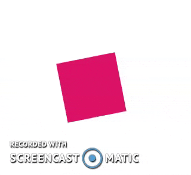

Descriptions
SitePoint
-
SitePoint - These exercises covered activities related to web socket connections,
multimedia playing/stopping, and other CSS animations. The HTML and JS files provided for
SitePoint contain code for establish a Websocket connection.
Study
-
Study - These exercises covered activities related to CSS3 animations along with
JavaScript animations. The HTML and JS files provided for Study illustrate a spinning
red square based on SitePoint's provided material.
Team Activity
-
Team Activity - This week came in two parts (as illustrated on the left):
-
Original Attempt - This first attempt was our team's first go at the Team
Activity code. We finished the Core Requirements, but knew our code could be updated
further.
-
Second Attempt - This second attempt fixed and cleaned the sections of code
needing help in our first attempt. We consolidated our functions, reduced the number
of case statements used, and created lists for all the data-key values.
This Week's Highlights
SitePoint CSS3 Animations
